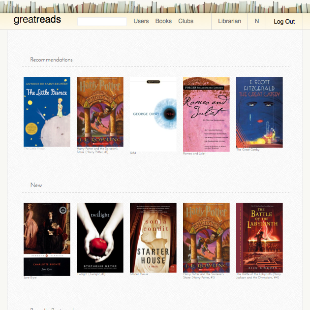

I am a software developer located in Brooklyn, NY. I write software in Ruby, Javascript and C++. I graduated from Macaulay Honors College at Hunter College with a B.A. in Mathematics and Computer Science.
about
projects

Book reviewing Ruby on Rails web application. Features reviews, likes and comments via unobtrusive AJAX. Book database is maintained by a custom-built script to consume the Goodreads. Delivers email for user signups via SendGrid.
Javascript implementation of classic arcade game, Asteroids. Game drawn on HTML5 canvas-element. Javascript event listeners take in keyboard input as game controls.
Clone basic features of Active Record. Reconstruct mass assignment, abstracts away database querying and builds class associations using ruby metaprogramming.
contact